Alexander Vaynberg and Zhong Shao
Yale University
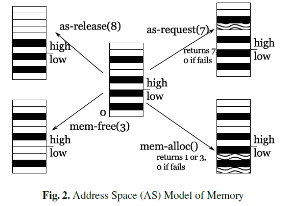
MAS,LAS⊢Ckernel:ΨkernelAS 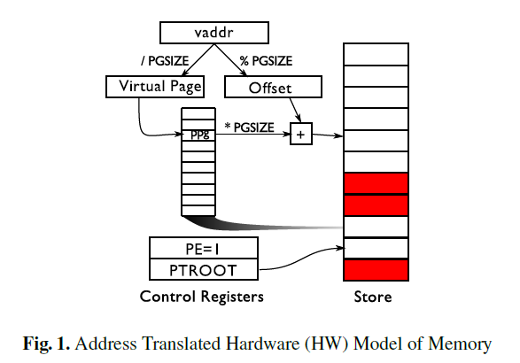
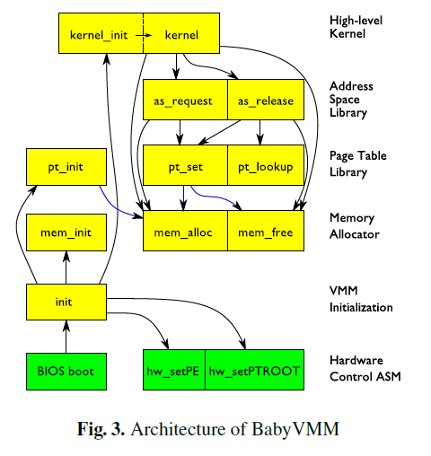
MHW,LHW⊢Ckernel∪Cas∪Cpt∪Cmem∪Cinit:ΨkernelHW∪ΨasHW∪ΨptHW∪ΨmemHW∪ΨinitHW dom(LHW)={hw_setPE,hw_setPTROOT} 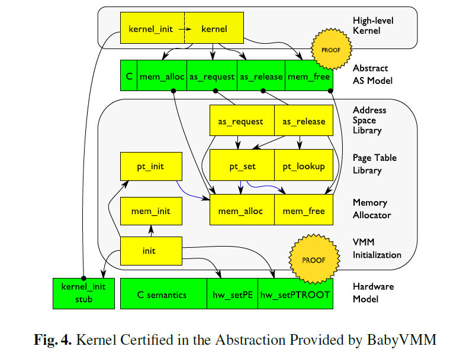
C ::= {l→I}∗ I ::= nil|ι|[l]|I1;I2|(b?I1+I2) M ∈ (Σ,Δ,β,γ,OS) ι ∈ Δ OS ∈ {ι→(p,g)}∗ p ∈ Σ→Prop g ∈ Σ→Σ→Prop Ψ,L ::={l→(p,g)}∗ 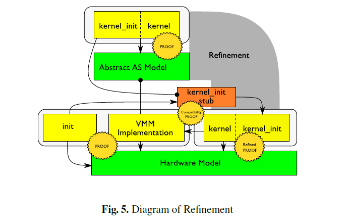
(TC,TΨ) Acc pt_set在ALE Model这个以mem_alloc; mem_free为L MHW,TALE−HW(LALE) ⊢C(pt_set):TALE−HW(ΨALE(pt_set)) MA.Δ=MC.Δ ∧ MA.β=MC.β Tα 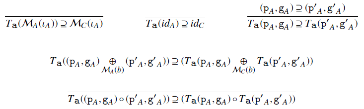
where
repr:MA.Σ→MC.Σ→Porp TA−C(p,g)=(λSC.∃SA.repr SA SC ∧ p SA,λSC.λS′C.∀SA.repr SA SC→∀S′A.g SA S′A→repr S′A S′C) M,L1⊢C1:Ψ1M,L2⊢C2:Ψ2C1⊥C2L1⊥Ψ2L2⊥Ψ1L1⊥L2M,((L1∪L2)∖(Ψ1∪Ψ2)) ⊢ C1∪C2:Ψ1∪Ψ2 Ψ1⊥Ψ2 ::= ∀l∈dom(Ψ1).(l∉dom(Ψ2)∨Ψ1(l)=Ψ2(l)) M,L⊢C:Ψ L′ s.t. ∀l∈dom(L).L(l)⊇L′(l)∧dom(L′)∩dom(Ψ)=∅ M,L′⊢C:Ψ L 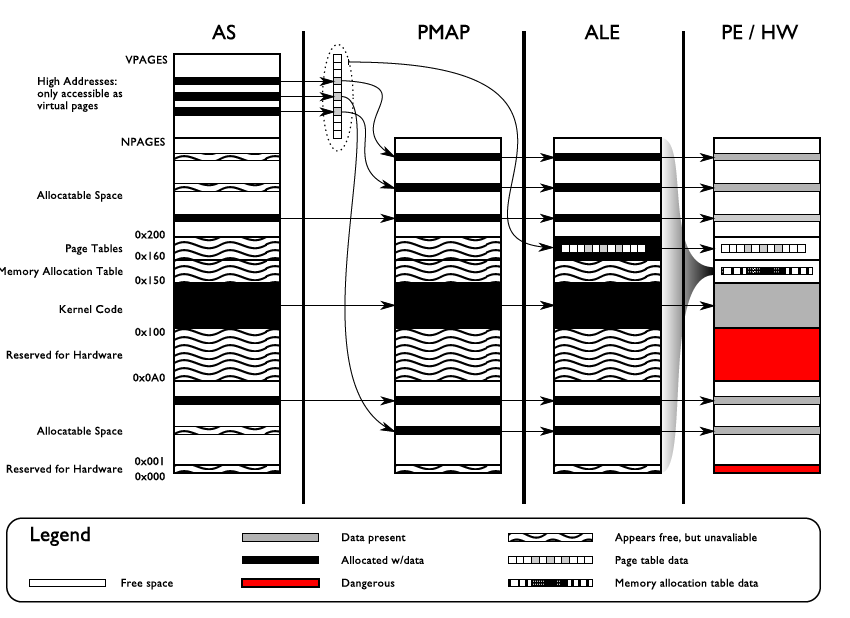
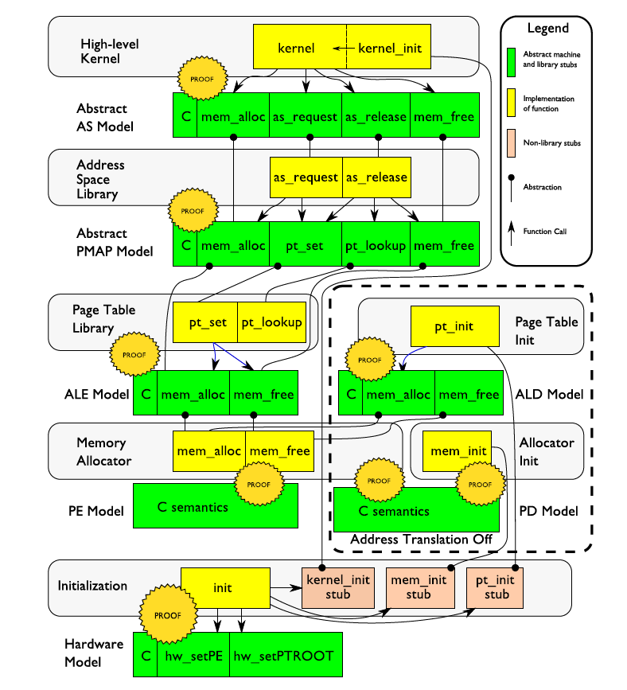
load和save两个接口M1≤M2 ∀l,v.load(M1,l)=v→load(M2,l)=v∀l,v,M′1.(M′1=(store(M1,l,v)))→(M′1≤(store(M2,l,v))) repr := λSA,SC.(SC.S=SC.S)∧(SA.M≤SC.M) load和save两个接口，Procedures中无法直接访问其数据结构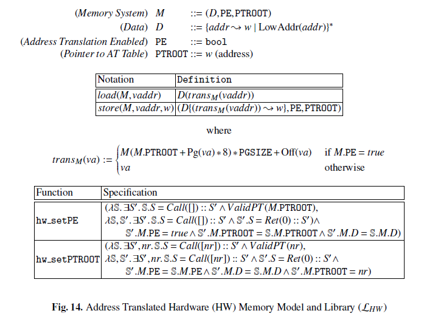
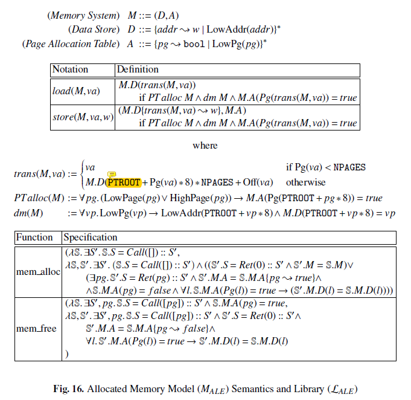
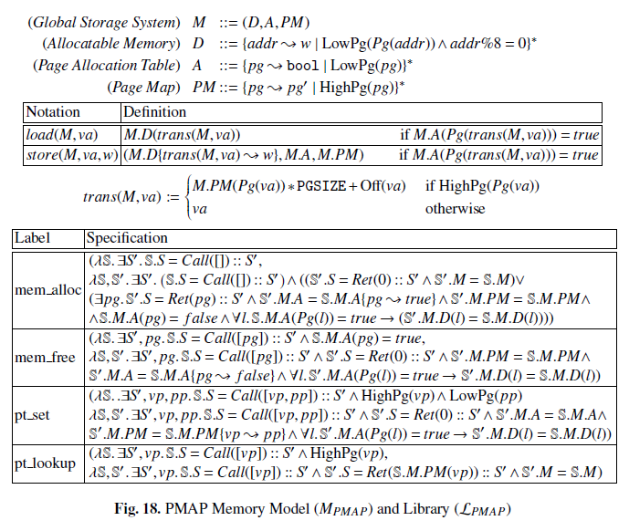
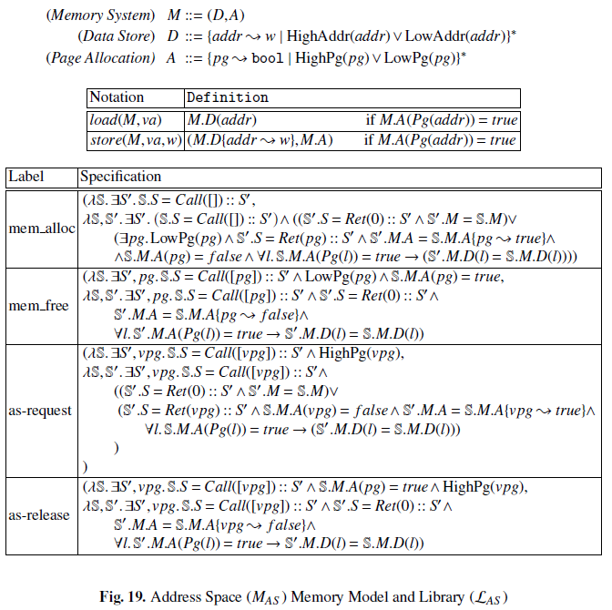
TAS−PMAP∘TPMAP−ALE∘TALE−PE∘TPE−HW MHW,LHW⊢Ckernel∪Cas∪Cpt∪Cmem∪Cinit:TAS−HW(ΨkernelAS)∪TPMAP−HW(ΨasPMAP)∪TALE−HW(ΨptALE)∪TPE−HW(ΨmemPE)∪TPD−HW(ΨinitPD)